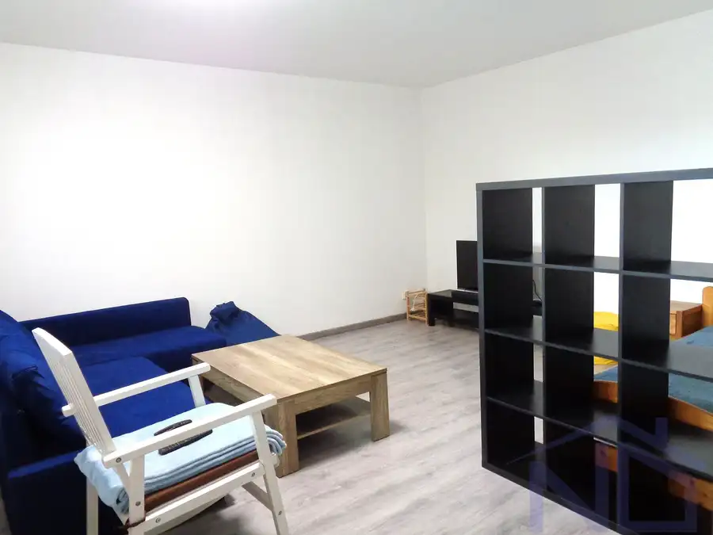
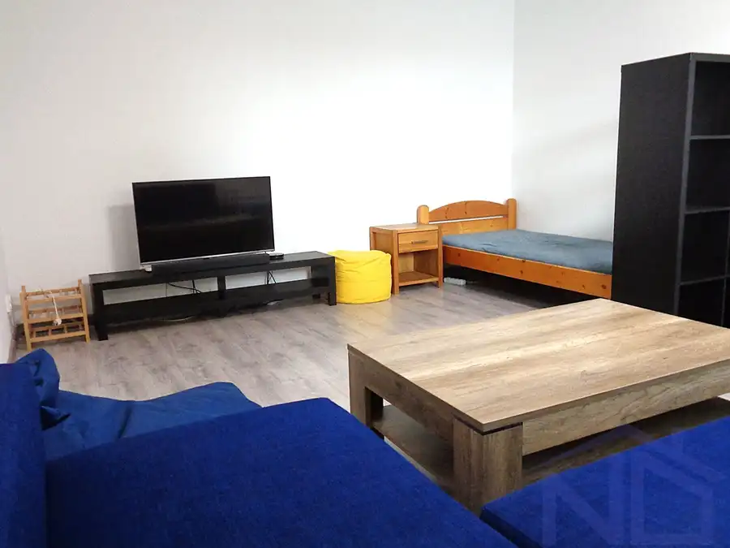
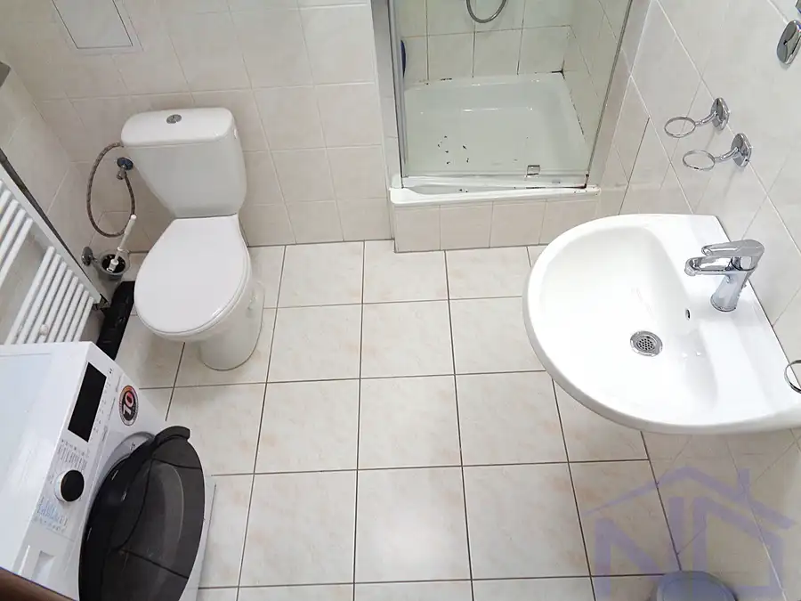

Jednoizbový byt, 40 m2, Stupava, Cementárenská ul., zariadený, novostavba
Stupava




- Dispozícia1-izbový
- Plocha40 m²
- Poschodie1. z 4
- StavNovostavba
- VlastníctvoOsobné
- Energetická triedaA
O nehnuteľnosti
Ponúkame na prenájom zariadený, jednoizbový byt, v Stupave, na Cementárenskej ulici, podlahová plocha bytu 40 m2. Byt sa nachádza na prízemí bytového domu, je bezbariérový, v tehlovom dome, novostavbe, orientovaný na východ. Byt je výborne dispozične riešený, kúpeľňa so sprchovým kútom, miestom pre pračku, toaletou, vo vstupnej chodbe rolldor, oddelená kuchyňa s oknom, rohová kuchynská linka s dostatočným úložným priestorom, spotrebičmi, jedálenská časť, obývacia izba s veľkým oknom, s rohovou sedačkou, TV, priestor na spanie.Bývanie sa nachádza v širšom centre Stupavy.Cena nájmu je vrátane energií, PARKOVACIEHO STÁTIA, signálu TV a internetu.Požadovaný jednomesačný depozit.Cena nájmu je vrátane energií: 640,- EUR / mesiac V CENE NÁJMU sú zahrnuté energie, PARKOVACIE STÁTIE, TV a internet od ORANGEKONTAKT: 0948 045 130, Kamil Hýravý, kamil.hyravy@rknovydomov.sk
Parametre
- Cena vrátane energií
- Áno
- Druh
- 1 izbový byt
- Dátum zverejnenia
- 28. 08. 2026
- Energetický certifikát budovy
- A
- Orientácia
- Východná
- Podlažie
- 1
- Počet nadzemných podlaží
- 4
- Počet pivníc
- 1
- Počet vonkajších parkovacích miest
- 1
- Stav nehnuteľnosti
- Novostavba
- Telekomunikácie
- Internet, Optická sieť
- Typ
- Prenájom
- Typ konštrukcie
- Tehlová
- Umiestnenie
- Nadstavba
- Vlastníctvo
- Osobné
- Vybavenie
- Pivnica, Vonkajšie parkovacie miesto, Výťah
- Vybavenie objektu
- Štandardné
- Vykurovanie
- Ústredné
- Zariadenie
- Nezariadené
- Úžitková plocha
- 40 m²
Kde to je


Mohlo by Vás zaujímať
 DomNové
460 000 €Predaj Rodinného domu s pozemkom, výmera pozemku 1336 m2, Bratislava - Záhorská Bystrica
Záhorská Bystrica, Bratislava
110 m²
DomNové
460 000 €Predaj Rodinného domu s pozemkom, výmera pozemku 1336 m2, Bratislava - Záhorská Bystrica
Záhorská Bystrica, Bratislava
110 m²
 DomNové
194 400 €Rodinný dom a stavebný pozemok, výmera 1944 m2, Vysoká pri Morave
Vysoká pri Morave
200 m²
DomNové
194 400 €Rodinný dom a stavebný pozemok, výmera 1944 m2, Vysoká pri Morave
Vysoká pri Morave
200 m²
 BytRezervované
152 000 €Predaj dvojizbový byt, 48 m2, Stupava, Hlavná ulica
Stupava
2-izbový48 m²4. podlažie
BytRezervované
152 000 €Predaj dvojizbový byt, 48 m2, Stupava, Hlavná ulica
Stupava
2-izbový48 m²4. podlažie